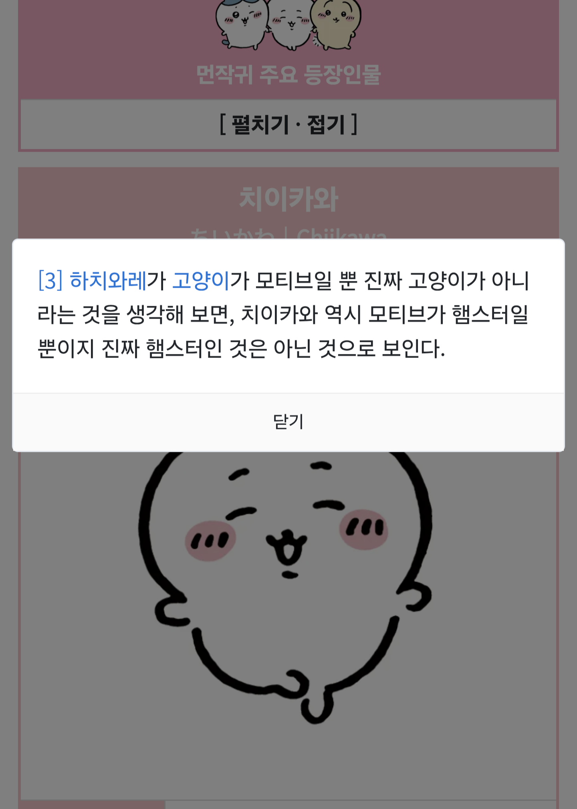
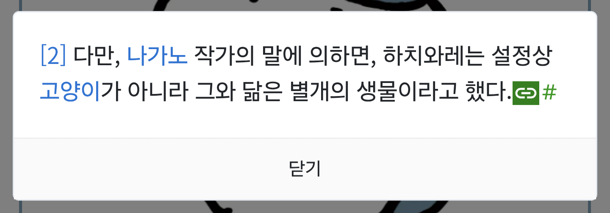
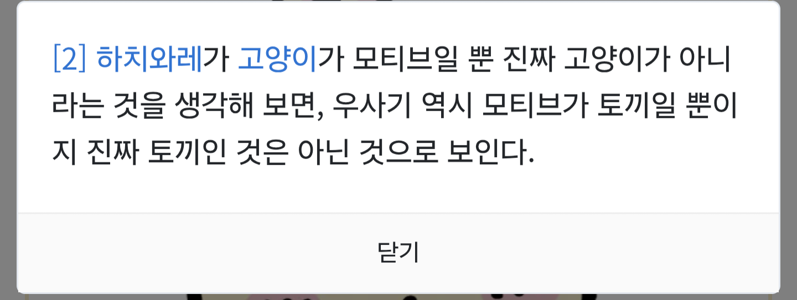
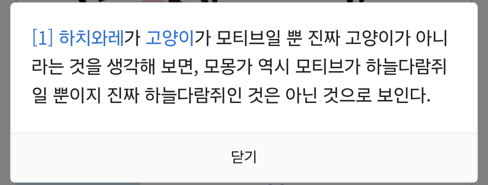

동물이 아니였어...?
그니까 외형 동물형태를한? 털이 수북한 무언가




동물이 아니였어...?
그니까 외형 동물형태를한? 털이 수북한 무언가
헬로키티도 고양이 아니래
인간 소녀래 ㄷㄷ
먼가 작고 귀여운 것일뿐...
작고 귀여운 동물은 맞음 개 고양이가 아닐 뿐이지
지배계층=갑옷씨
치이카와족=피지배계층
괴물=노예생활에 지쳐 미쳐버린 존재들
쟤내 다 자라면 괴물되는데 당연히 동물 아니겠지
그렘린 같은거 아니냐, 트리거 땡기면 괴물되는
어디서 듣기로 독자들이 고양이는 뭐 이거하면 안되요 먹으면 안되요 이런식으로 태클 들어올거 쳐낼려고 작가가 만든 설정이라 했던거 같음
나가노 똑똑함 ㅋㅋㅋ
이게 진짜면 천잰데
실제로 고양이는 초콜릿이 포함된 음식을 아예 못먹는데 그런 디저트들 맛있게 먹고 단맛도 잘 느끼고 행복해했으면해서 만든 설정이라함 ㅋㅋ
과몰입금지
머먼가? 귀여워서좋음
모몽가는 예를들면 백종원이 귀여운 어린아이의 몸을 빼앗아 영혼바꿔치기를해서 귀여운 척하고 다니는 애임
나여 모몽가 이야 야다야다
싸커킥 마렵네 모몽가
이야~
야다야다
먼작귀를 먹지 말라는 법이 있을까?
더 좋네 아저씨 여고생 ts물이라는거잩ㅎ아
애초 고양이 외형의 하치랑,
햄스터?곰? 외형의 치이의 크기가 똑같은거만 봐도,
동물은 아니고 그 모습을 모티브한 먼작귀족 이라 보는게 맞을듯
고양이가 아님 >> 고양이퍼리
토끼아님 >> 토끼퍼리
이런거 아님?
고양이라는 종이 아니라고
그거야 당연히 얘들은 이족보행을 하니까
??? : 공식이 뭘 알아?
그건 고양이가 아니야 다른 뭔가라고
말도 하는데 고양이 아니라고 하면 아닌거지 뭐
포켓몬 같은건가?
피카츄도 쥐 아님
듣는 썰로 고양이면 초콜렛 못 먹어서 걍 고양이 아니라고 한거 같은데 애니 보다보면 하치와레 고양이 모먼트 존나 나옴 털 토하는거나, 냄새맡으면 정지되는거나
정체를 모르는 '뭔가 작고 귀여운 것'이라는 설정이 제일 무서운 설정임
더씽 ㄷㄷ
그래서 제목도 뭔가작고귀여운녀석들 인건가 뭔지는 모르겠지만
그건 동물이 아니야! 동물의 형태를 한 무언가라고!!